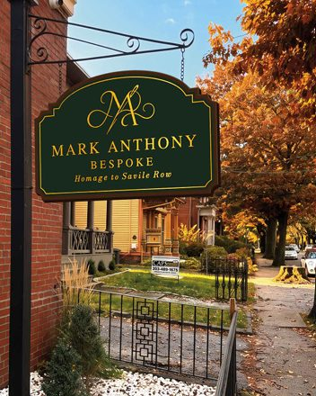

A finished two-piece suit on a mannequin in the window
Suits
Two- and three-piece, for the working week or for one particular day.
Suits, jackets and overcoats cut to a pattern drafted for you alone, and made entirely by hand. Three rooms in Wooster Square, by appointment, opening October 2026.

 Photograph to comePhotograph to comePhotograph to come
Photograph to comePhotograph to comePhotograph to comeBespoke means the pattern starts with you, not with a size. Your measurements become a pattern drafted for you alone. A test garment, the toile, is cut from it and fitted on you before your cloth is touched.
Every garment we make is made fully by hand. There is no made-to-measure option and no rail of finished suits: the house does one thing.
Most people hesitate over bespoke because they don't know how long it takes or how often they'll need to come in. This is the whole of it.
Week 0
Conversation, measurements, cloth.
You attend
About week 3
A test garment, fitted and corrected on you.
You attend
Weeks 4–8
Cut from your cloth and made by hand.
In the workshop
About week 8
The garment on you; last marks made.
You attend
Weeks 8–12
Pressed, finished, and yours.
You attend
Weeks are approximate. TK: Mark to confirm typical intervals between visits
Two- and three-piece, for the working week or for one particular day.
Sports coats and blazers, cut to be worn without the matching trouser.
Often ordered two or more at a time, to go with a jacket you already wear.
Bespoke shirts, measured at the same sitting as your tailoring.
Also overcoats, waistcoats, dinner suits, morning dress and white tie. All commissions
Every visit is booked, and each kind of visit has its own calendar. If this is your first time, start with the consultation.
First-time clients
90minutes
We talk through the commission, take your measurements and go through the cloth books together. Book this first.
Book a consultationClients mid-commission
45minutes
The toile fitting, or the final fitting in your cloth. We'll have told you which one you're due.
Book a fittingGarment ready
30minutes
The finished garment, any last adjustments, and it goes home with you.
Book a collectionA lobby with a chandelier and a tiled floor. A fitting room with hardwood floors and two windows onto Chapel Street. A workroom at the back for pressing and cloth.
There is no walk-in trade. You come at a time you've booked, and the rooms are set aside for you.
The first appointment runs ninety minutes. We talk about what the commission is for, take your measurements, and go through the cloth. 528 Chapel Street, by appointment.